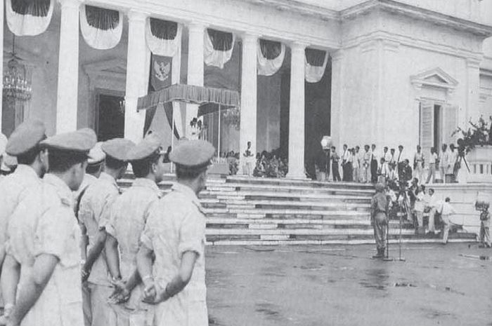
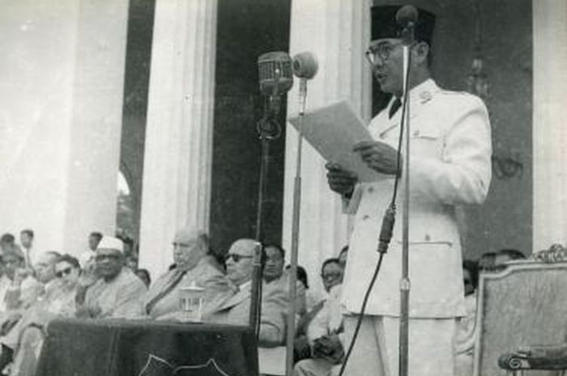
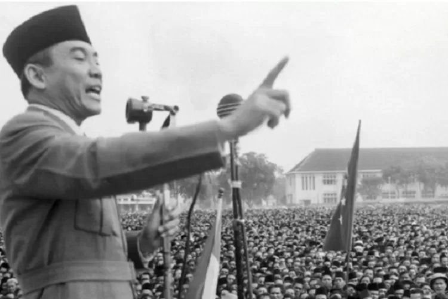
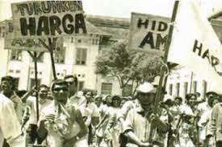
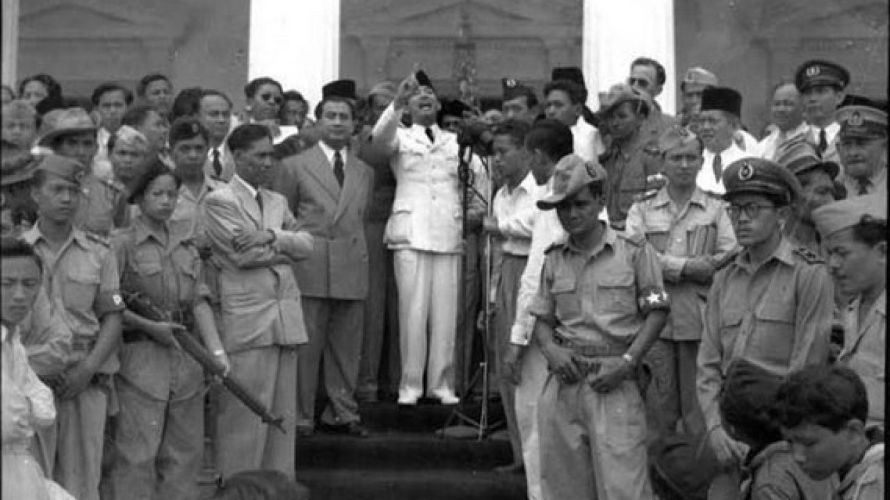
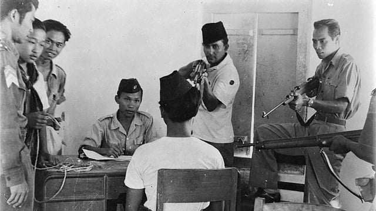
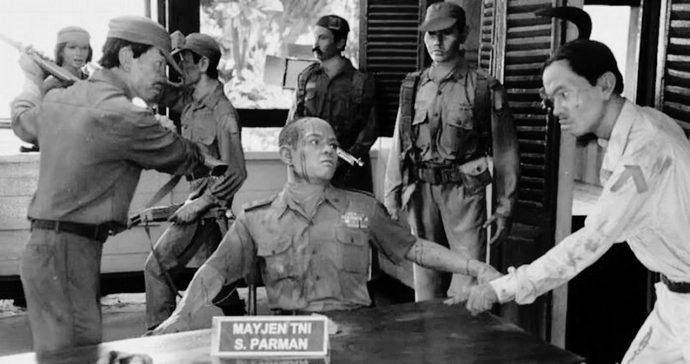
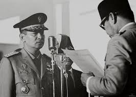

Demokrasi Terpimpin, juga dikenal sebagai Orde Lama, adalah sistem politik yang berlaku di
Indonesia dari tahun 1959 sampai Orde Baru dimulai pada tahun 1966.
Periode ini mengikuti pembubaran periode demokrasi liberal di Indonesia oleh Presiden Soekarno,
yang memusatkan kendali atas nama stabilitas politik.
Namun, pada tingkat nasional, ini berarti pemerintahan terpusat di bawah Sukarno: darurat militer,
pengurangan besar-besaran terhadap kebebasan sipil dan norma-norma demokrasi,
dan TNI dan Partai Komunis Indonesia bertindak sebagai blok-blok kekuatan utama.
Latar Belakang

Setelah Indonesia merdeka, diterapkan sistem Demokrasi Liberal yang memberi kebebasan besar bagi partai-partai
politik. Namun, sistem ini menghadapi banyak tantangan. Perseteruan antarpartai semakin kuat, mengakibatkan
ketidakstabilan politik dan pemerintahan yang tidak efektif. Bahkan, kabinet sering jatuh sebelum program-programnya
sempat berjalan dengan baik.

Kondisi ini membuat Presiden Soekarno mencari solusi yang lebih efektif. Pada 5 Juli 1959, beliau mengeluarkan Dekrit
Presiden 5 Juli 1959 yang membubarkan Konstituante dan menetapkan kembali UUD 1945 sebagai dasar negara, menggantikan
UUD Sementara 1950. Dari sinilah era Demokrasi Terpimpin dimulai.
Tujuan

Nasionalisme
terpimpin mempertahankan dan memperkuat kedaulatan nasional serta kemandirian negara dalam berbagai aspek kehidupan, termasuk politik, ekonomi, dan budaya.
Keadilan sosial
Demokrasi terpimpin mengurangi kesenjangan sosial dan ekonomi antara berbagai kelompok dalam masyarakat. Tujuan ini termasuk pengentasan kemiskinan, pemerataan kesempatan, dan akses yang lebih adil terhadap sumber daya dan pelayanan publik.
Kesejahteraan rakyat
Demokrasi terpimpin meningkatkan kesejahteraan masyarakat secara umum dengan meningkatkan standar hidup, mengurangi pengangguran, menyediakan pelayanan kesehatan dan pendidikan yang terjangkau, serta meningkatkan kualitas hidup masyarakat.
Kemandirian ekonomi
Demokrasi terpimpin mendorong pembangunan ekonomi nasional dengan mengurangi ketergantungan terhadap pihak asing dan mempromosikan pengembangan industri, pertanian, dan sektor-sektor ekonomi strategis lainnya.
Modernisasi sosial dan budaya
Demokrasi terpimpin mengubah dan memodernisasi masyarakat dalam hal nilai-nilai, norma, dan gaya hidup, sambil tetap mempertahankan warisan budaya dan tradisi yang berharga.
Persatuan dan kebersamaan
Demokrasi terpimpin membangun persatuan dan kesatuan nasional, memperkuat ikatan sosial, dan meningkatkan rasa kebersamaan antarwarga negara.
Pelaksanaan
Pembubaran Konstituante (1959):
Dekrit Presiden, Konstituante dibubarkan karena gagal menyusun konstitusi baru.
Penetapan Sistem Nasakom:
Soekarno berupaya menyatukan tiga kekuatan besar di Indonesia (nasionalis, agama, dan komunis).
Pembentukan MPRS dan DPR-GR:
MPRS dibentuk dengan anggota yang ditunjuk oleh Presiden, sehingga lebih bersifat sebagai alat pendukung kebijakan Presiden.
Penguatan Peran Militer:
Soekarno memberikan peran besar kepada militer untuk menjaga stabilitas nasional, sekaligus mengimbangi kekuatan Partai Komunis Indonesia (PKI).
Konfrontasi dengan Malaysia:
Sebagai bentuk perlawanan terhadap pembentukan Federasi Malaysia, Soekarno mencanangkan kebijakan Ganyang Malaysia.
Hasil Demokrasi Terpimpin

Kebijakan Konfrontasi:
Konfrontasi Malaysia: Indonesia menentang pembentukan Federasi Malaysia.
Pembebasan Irian Barat: Berhasil mengintegrasikan Irian Barat ke wilayah Indonesia melalui operasi militer dan diplomasi.
Ekonomi Memburuk:
Inflasi mencapai lebih dari 600% karena fokus pada pembangunan politik dan militer, bukan ekonomi.
Kebebasan Rakyat Terbatas:
Masyarakat kehilangan kebebasan berbicara dan berpolitik.
Peran PKI Menguat:
PKI menjadi kekuatan politik utama, yang menimbulkan ketegangan antara militer dan kelompok komunis.
Kelebihan

Stabilitas Politik:
Dengan mengurangi peran partai politik yang sering berseteru, konflik antarpartai dapat diredam, sehingga stabilitas politik sementara tercapai.
Penguatan Nasionalisme:
Demokrasi Terpimpin berhasil menyatukan rakyat dalam perjuangan nasional, seperti pembebasan Irian Barat dan konfrontasi Malaysia.
Kepemimpinan yang Terpusat:
Kepemimpinan Soekarno yang kuat mempermudah pengambilan keputusan besar tanpa hambatan dari parlemen yang sebelumnya sering terpecah.
Penerapan Konsep Gotong Royong:
Demokrasi Terpimpin mengusung konsep gotong royong yang dianggap lebih cocok dengan budaya Indonesia dibandingkan sistem liberal.
Kekurangan

Otoritarianisme:
Kekuasaan terpusat pada Presiden Soekarno, sehingga prinsip demokrasi seperti checks and balances diabaikan. Rakyat kehilangan suara dalam menentukan kebijakan.
Krisis Ekonomi:
Fokus pada politik dan militer menyebabkan pengabaian sektor ekonomi, yang berujung pada hiperinflasi hingga 600% dan kemiskinan meluas.
Pembatasan Hak Asasi:
Kebebasan pers, kritik terhadap pemerintah, dan kebebasan berpendapat dibatasi. Sistem ini cenderung represif terhadap pihak yang tidak sejalan.
Konflik Ideologi:
Dominasi PKI dan konsep Nasakom memicu ketegangan ideologis antara kelompok komunis, nasionalis, dan agama, yang akhirnya berujung pada Peristiwa G30S/PKI.
Militerisasi Pemerintahan:
Militer memainkan peran besar dalam politik, sehingga demokrasi tidak berjalan sebagaimana mestinya.
Akhir Demokrasi Terpimpin

Peristiwa G30S/PKI (1965):
Kudeta yang diduga dilakukan oleh PKI membawa krisis politik besar di Indonesia.
Jatuhnya Soekarno:
Kegagalan Soekarno menangani konflik G30S dan memburuknya situasi ekonomi membuat militer (dipimpin Soeharto) mengambil alih kekuasaan.

Supersemar (1966):
Soekarno menyerahkan kekuasaan kepada Soeharto melalui Surat Perintah Sebelas Maret.
Transisi ke Orde Baru:
Demokrasi Terpimpin berakhir, digantikan oleh sistem Orde Baru yang dipimpin oleh Soeharto dengan pendekatan berbeda, yaitu Demokrasi Pancasila.